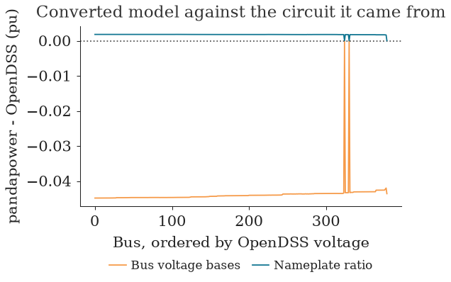
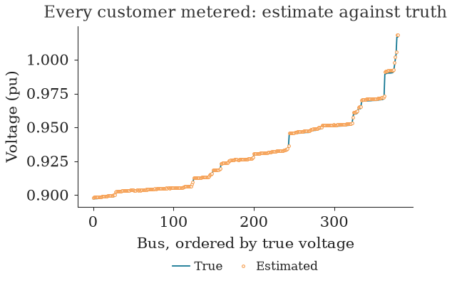

LV State Estimation#
Objectives#
Below the secondary substation, most low-voltage networks are not measured in real time: an operator knows the voltage and power at the busbar and little else, and cannot say what a given customer's voltage is right now without sending someone to measure it. State estimation infers the voltage at every bus from whatever is measured, plus a model of the network. This notebook asks how much has to be measured for that to work, on the same UK feeder as the time-series notebook:
- Convert the OpenDSS feeder to pandapower with
popo.estimation.to_pandapower, and check the conversion against OpenDSS withcheck_conversionbefore trusting it. - Count whether a measurement set can determine the state at all, with
observability. - Estimate every bus voltage from the substation plus smart-meter readings with
estimate_voltages, and score it against the true state withvoltage_error. - Find out how many meters are enough, and whether line sensors can stand in for missing ones.
- See how the quality of a substation forecast carries through to the estimate, with
run_comparison.
State estimation needs pandapower: uv add pop-flow[estimation].
import copy
import logging
from pathlib import Path
import warnings
import matplotlib.pyplot as plt
import numpy as np
import pandas as pd
import style
from popo.estimation import (
MeasurementNoise,
check_conversion,
estimate_voltages,
observability,
run_comparison,
set_loading,
to_pandapower,
true_state,
voltage_error,
)
from popo.plotting.tables import record_table, themed_gt
warnings.filterwarnings("ignore")
logging.getLogger("pandapower").setLevel(logging.CRITICAL) # an unobservable set is a result here, not an error
style.configure()
DATA = Path("../tests/data")
FEEDER = DATA / "dss_uk_network_17_1_1149" / "master_network_17_1_1149.dss"
household_pool = pd.read_parquet(DATA / "uk_household_pu_96.parquet").to_numpy()
SEED = 20260904
STEP = 36 # 18:00 on the first day, the evening peak
BASE_KW = 1.3 # mean household demand the per-unit profiles are scaled to
POWER_FACTOR = 0.95
TRIALS = 8 # random draws per configuration below
1. Converting the network, and checking it first#
OpenDSS has no state estimator; pandapower does. to_pandapower converts the feeder with pandapower's own OpenDSS converter, and check_conversion then solves both engines at the same loading and compares every bus. A converted model is only worth estimating on if it reproduces the circuit it came from.
The converter rates each transformer winding at its bus's voltage base. That equals the transformer's turns ratio only when the winding's rated voltage equals the base, and here it does not: the secondary is rated 0.416 kV on a 0.4 kV system, a 4% boost that a model built on bus bases loses. to_pandapower restores the nameplate ratio. The comparison below shows both.
net, lv_bus = to_pandapower(FEEDER)
corrected = check_conversion(net)
as_converted = copy.deepcopy(net)
as_converted.trafo["vn_lv_kv"] = as_converted.bus.vn_kv.loc[as_converted.trafo.lv_bus].to_numpy()
uncorrected = check_conversion(as_converted)
conversion = pd.DataFrame(
{
"transformer ratio": ["bus voltage bases", "nameplate"],
"buses compared": [len(uncorrected), len(corrected)],
"mean difference (pu)": [uncorrected.difference_pu.mean(), corrected.difference_pu.mean()],
"largest difference (pu)": [uncorrected.difference_pu.abs().max(), corrected.difference_pu.abs().max()],
}
)
themed_gt(conversion, decimals=4)
| transformer ratio | buses compared | mean difference (pu) | largest difference (pu) |
|---|---|---|---|
| bus voltage bases | 380 | −0.0439 | 0.0449 |
| nameplate | 380 | 0.0018 | 0.0018 |
fig, ax = plt.subplots(figsize=style.panel_size(width=0.6 * style.PANEL_WIDTH_IN, aspect=0.74))
for frame, label, color in (
(uncorrected, "Bus voltage bases", style.HIGHLIGHT),
(corrected, "Nameplate ratio", style.PRIMARY),
):
ordered = frame.sort_values("vm_opendss_pu")
ax.plot(np.arange(len(ordered)), ordered["difference_pu"], color=color, lw=style.LINE_WIDTH, label=label)
style.reference_line(ax, 0.0)
ax.set_xlabel("Bus, ordered by OpenDSS voltage")
ax.set_ylabel("pandapower - OpenDSS (pu)")
ax.set_title("Converted model against the circuit it came from")
style.format_axes(ax)
style.legend_below(ax, ncol=2)
style.show(fig)

Built on its buses' voltage bases, the converted network sits 0.044 pu below OpenDSS at every LV bus: more than the whole voltage drop along many feeders, and enough to turn a compliant customer into a violation on paper. With the nameplate ratio, the two engines agree to within 0.0018 pu at every bus. The two spikes to zero are the 11 kV buses, which the ratio does not affect.
The 0.0018 pu that remains is not a conversion error to fix but a property of the model: pandapower's converted network is balanced, one voltage per bus, while the feeder's single-phase customers load its three phases unevenly. No estimate built on this model can be judged more finely than that.
2. The true state at the evening peak#
Each customer gets a real household profile from the pool, scaled to a mean demand of 1.3 kW at a 0.95 power factor, and the network is solved at 18:00, the evening peak. The result is the one thing an operator never has: the true voltage at every bus. It is used below only to score each estimate, never fed to the estimator.
rng = np.random.default_rng(SEED)
customers = len(net.load)
profile = household_pool[STEP, rng.integers(0, household_pool.shape[1], customers)]
active_mw = profile * BASE_KW / 1000
reactive_mvar = active_mw * np.tan(np.arccos(POWER_FACTOR))
set_loading(net, active_mw, reactive_mvar)
v_true, substation_mw, substation_mvar = true_state(net)
line_flows_true = net.res_line[["p_from_mw", "q_from_mvar"]].copy()
record_table(
{
"customers": customers,
"buses": len(net.bus),
"substation active power (kW)": 1000 * substation_mw,
"lowest voltage (pu)": v_true.min(),
"highest voltage (pu)": v_true.max(),
},
title="The true state at 18:00",
)
| The true state at 18:00 | |
| statistic | value |
|---|---|
| customers | 188 |
| buses | 380 |
| substation active power (kW) | 381.388 |
| lowest voltage (pu) | 0.897 |
| highest voltage (pu) | 1.017 |
3. The substation alone#
An estimator solves for two unknowns at every bus, voltage magnitude and angle, less one reference angle: $2N - 1$ unknowns for $N$ buses. Every measurement supplies one equation, and so does each bus known to inject nothing, twice over (zero active and zero reactive power). observability counts the two before the estimator is run:
noise = MeasurementNoise()
def read(metered=(), sensors=(), seed=0):
"""Substation, meter and line-sensor readings with their instruments' noise, then an estimate."""
r = np.random.default_rng(seed)
meter_p = active_mw * (1 + r.normal(0, noise.smart_meter_pq_fraction, customers))
meter_q = reactive_mvar * (1 + r.normal(0, noise.smart_meter_pq_fraction, customers))
flows = {
int(line): tuple(line_flows_true.loc[line].to_numpy() * (1 + r.normal(0, noise.line_pq_fraction, 2)))
for line in sensors
}
return estimate_voltages(
net,
lv_bus,
voltage_pu=v_true[lv_bus] + r.normal(0, noise.voltage_pu),
active_mw=substation_mw * (1 + r.normal(0, noise.substation_pq_fraction)),
reactive_mvar=substation_mvar * (1 + r.normal(0, noise.substation_pq_fraction)),
customer_active_mw=meter_p,
customer_reactive_mvar=meter_q,
metered=list(metered),
line_flows=flows,
)
count = observability(net, lv_bus, metered=0)
print(
f"Unknowns: {count.required}. Equations from the substation alone: {count.available} (short by {count.shortfall})."
)
print(f"Estimate from the substation alone: {'none' if read() is None else 'found'}")
Unknowns: 759. Equations from the substation alone: 385 (short by 374).
Estimate from the substation alone: none
The substation supplies three equations: the busbar voltage and the active and reactive power through the transformer. The 191 buses known to inject nothing (junctions, the busbar itself and the 11 kV bus) supply two each. That is 385 equations for 759 unknowns. The estimator has nothing to solve: this is not an inaccurate estimate, it is no estimate at all, and estimate_voltages returns None rather than an answer.
4. Smart meters as pseudo-measurements#
A smart meter does not report its customer's voltage in real time; it reports consumption, periodically. Each meter therefore enters the estimator as a pseudo-measurement of active and reactive power at its customer's bus, with a 10% uncertainty, against the 2% of the substation's own instruments.
all_customers = range(customers)
full = [read(all_customers, seed=s) for s in range(TRIALS)]
errors = pd.DataFrame([voltage_error(e, v_true) for e in full if e is not None])
print(f"Every customer metered: {len(errors)} of {TRIALS} draws solved.")
themed_gt(errors.agg(["mean", "max"]).rename_axis("over draws").reset_index(), decimals=4)
Every customer metered: 8 of 8 draws solved.
| over draws | mean_abs_pu | max_abs_pu | at_worst_bus_pu |
|---|---|---|---|
| mean | 0.0017 | 0.0025 | 0.0020 |
| max | 0.0040 | 0.0055 | 0.0054 |
estimate = full[0]
order = np.argsort(v_true)
fig, ax = plt.subplots(figsize=style.panel_size(width=0.6 * style.PANEL_WIDTH_IN, aspect=0.74))
ax.plot(np.arange(len(order)), v_true[order], color=style.PRIMARY, lw=style.LINE_WIDTH, label="True")
ax.plot(
np.arange(len(order)), estimate[order], "o", mec=style.HIGHLIGHT, mfc="white", label="Estimated", **style.MARKER
)
ax.set_xlabel("Bus, ordered by true voltage")
ax.set_ylabel("Voltage (pu)")
ax.set_title("Every customer metered: estimate against truth")
style.format_axes(ax)
style.legend_below(ax, ncol=2)
style.show(fig)

With every customer metered, every draw solves, and the estimate is within 0.0017 pu of the true voltage on average and 0.0025 pu at the worst bus, close to the 0.0018 pu floor the balanced model sets. Over the eight draws of meter noise, the largest error anywhere is 0.0055 pu, a small fraction of the 0.10 pu between nominal and a statutory limit.
5. How many meters are enough?#
The substation meters the flow through the transformer, so the total demand behind it is known. With every customer but one metered, that one is the total less the rest. With two unmetered, only their sum is known, and nothing in the measurements separates them. The count says the same:
rows = []
for missing in range(0, 6):
solved = 0
for s in range(TRIALS):
metered = np.random.default_rng(100 + s).choice(customers, customers - missing, replace=False)
solved += read(metered, seed=s) is not None
count = observability(net, lv_bus, metered=customers - missing)
rows.append(
{
"unmetered customers": missing,
"equations": count.available,
"unknowns": count.required,
"solved": f"{solved}/{TRIALS}",
}
)
themed_gt(pd.DataFrame(rows))
| unmetered customers | equations | unknowns | solved |
|---|---|---|---|
| 0 | 761 | 759 | 8/8 |
| 1 | 759 | 759 | 8/8 |
| 2 | 757 | 759 | 0/8 |
| 3 | 755 | 759 | 0/8 |
| 4 | 753 | 759 | 0/8 |
| 5 | 751 | 759 | 0/8 |
One unmetered customer is recovered: 759 equations for 759 unknowns, and every draw solves. Two are not, in any draw. Coverage is not a dial that trades accuracy for cost on this feeder; below all customers but one, there is no estimate.
6. Line sensors instead of meters#
An operator short of full smart-meter coverage can add power-flow sensors on a few lines instead. A sensor adds two equations, the same as a meter, so the count improves with every one. Whether the estimate does depends on where it goes: a sensor resolves an unmetered customer only if the flow it measures separates that customer from the others. The comparison below starts from 90% coverage (19 customers unmetered) and adds sensors either on randomly chosen lines or on the service line of each unmetered customer.
def service_line(bus):
"""The line whose far end is a customer's bus."""
return int(net.line.index[(net.line.to_bus == bus) | (net.line.from_bus == bus)][0])
rows = []
for s in range(TRIALS):
r = np.random.default_rng(1000 + s)
metered = r.choice(customers, round(0.9 * customers), replace=False)
unmetered = sorted(set(range(customers)) - set(metered))
placements = {f"random, {k}": r.choice(len(net.line), k, replace=False) for k in (25, 50, 100, 200)}
placements[f"targeted, {len(unmetered)}"] = [service_line(int(net.load.bus.iloc[i])) for i in unmetered]
placements["none"] = []
for placement, sensors in placements.items():
estimate = read(metered, sensors, seed=s)
error = voltage_error(estimate, v_true)["max_abs_pu"] if estimate is not None else np.nan
rows.append({"placement": placement, "draw": s, "solved": estimate is not None, "max_error_pu": error})
sensors = pd.DataFrame(rows)
sensor_summary = (
sensors.groupby("placement", sort=False)
.agg(
solved=("solved", "sum"),
median_max_error_pu=("max_error_pu", "median"),
worst_max_error_pu=("max_error_pu", "max"),
)
.reset_index()
)
sensor_summary["solved"] = sensor_summary["solved"].map(lambda n: f"{n}/{TRIALS}")
themed_gt(sensor_summary, decimals=4)
| placement | solved | median_max_error_pu | worst_max_error_pu |
|---|---|---|---|
| random, 25 | 0/8 | ||
| random, 50 | 0/8 | ||
| random, 100 | 1/8 | 0.1959 | 0.1959 |
| random, 200 | 6/8 | 0.0020 | 0.0037 |
| targeted, 19 | 8/8 | 0.0036 | 0.0085 |
| none | 0/8 |
Where a sensor goes matters more than how many there are. Sensors on randomly chosen lines rarely help: most of the 377 lines are the service cables of customers who are already metered, so a sensor there adds equations without adding information. Fifty random sensors never solve; a hundred solve once in eight draws, and that one estimate is wrong by 0.35 pu, a reminder that a solved estimate is not a correct one and that its error has to be checked. Two hundred random sensors, more than half the lines, solve six times in eight.
Nineteen sensors placed on the service lines of the nineteen unmetered customers solve every draw, within 0.0036 pu at the median. That is the same information a meter would have given, measured on the line instead, and it is the lesson: a measurement helps when it separates an unknown injection from the rest, and the count of equations cannot tell whether it does.
7. When the substation reading is a forecast#
Everything above used the substation's measured state. An operator planning ahead has a forecast of it instead, and run_comparison asks whether the kind of forecast matters, at full meter coverage over a day of half-hours. Three substation inputs are fed to the same estimator: the true readings; a coherent forecast, one error applied to the demand and carried through a power flow, so its active power, reactive power and voltage describe a state the network can be in; and an incoherent one, each of the three perturbed on its own, as three separately calibrated forecasts would be. Both forecasts carry a 10% error.
comparison = run_comparison(FEEDER, household_pool, steps=48, smartmeter_frac=1.0, forecast_error=0.1, seed=SEED)
summary = comparison.summary()
summary.columns = [" ".join(column) for column in summary.columns]
print(f"Estimates that solved: {comparison.converged_fraction:.0%}")
themed_gt(summary.reset_index(), decimals=4)
Estimates that solved: 100%
| input | rmse_vm_pu mean | rmse_vm_pu median | max_abs_err_pu mean | max_abs_err_pu median |
|---|---|---|---|---|
| coherent | 0.0061 | 0.0047 | 0.0077 | 0.0058 |
| incoherent | 0.0096 | 0.0080 | 0.0115 | 0.0097 |
| truth | 0.0000 | 0.0000 | 0.0000 | 0.0000 |
Every estimate solved, so the difference between the rows is the quality of the state, not whether there is one. With the true substation readings the estimate is exact, since the meters here carry no noise. With a forecast, the coherent one gives a mean RMS error of 0.0061 pu; the incoherent one, with the same 10% error on each quantity, gives 0.0096 pu, about 57% worse. Three forecasts that are each well calibrated, but that together describe no state the network can be in, give the estimator a worse starting point than one consistent error.
Summary#
to_pandapowerconverts an OpenDSS feeder and restores each transformer's nameplate ratio;check_conversioncompares the converted model with OpenDSS bus by bus. On this feeder the bus-base ratio puts every LV bus 0.044 pu low, and the corrected model agrees within 0.0018 pu, the limit a balanced model of an unbalanced feeder sets.observabilitycounts equations against unknowns before an estimate is attempted. The substation alone is far short: no estimate exists.estimate_voltageswith every customer's meter as a pseudo-measurement recovers every bus within a few thousandths of a per unit. One customer can be left unmetered, since the transformer flow fixes the total; two cannot.- Line sensors help only where they separate an unmetered customer from the rest. Placed at random, even hundreds of them rarely give an estimate, and a solved estimate can still be badly wrong; placed on the unmetered customers' own lines, as many sensors as unmetered customers do.
run_comparisonshows that a coherent substation forecast gives a better state estimate than three separately calibrated ones of the same accuracy.